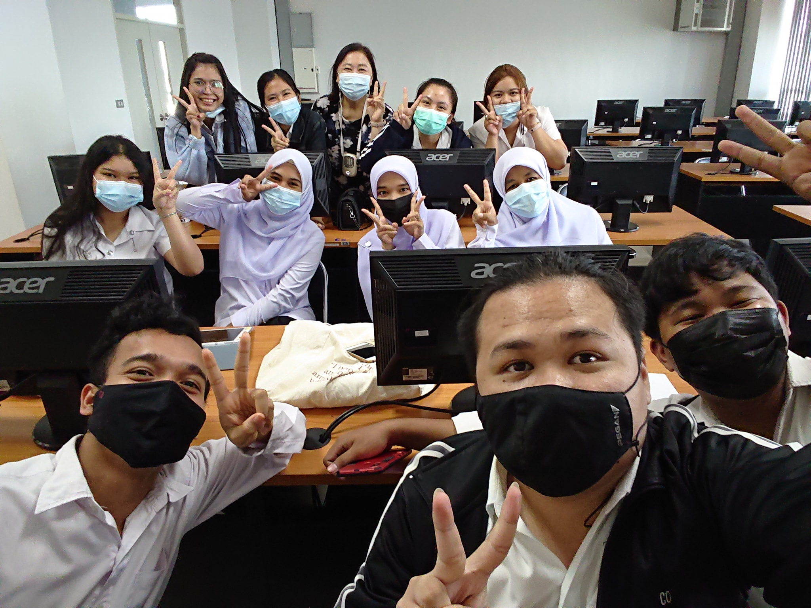

เว็บไซต์นี้เป็นส่วนหนึ่งของรายวิชาระบบการจัดการความรู้ (344-232) ภาคการศึกษาที่ 2 ปีการศึกษา 2563 มหาวิทยาลัยสงขลานครินทร์ วิทยาเขต หาดใหญ่ โดยเป็นการศึกษาและค้นคว้าเกี่ยวกับเครื่องมือการจัดการความรู้ (Knowledge Management Tools) เพื่อนำไปถ่ายทอดและแลกเปลี่ยนความรู้ ในการศึกษาของผู้สนใจในเรื่องเครื่องมือการจัดการความรู้ โดยมีผู้ช่วยศาสตราจารย์ ดร.วิภาดา เวทย์ประสิทธิ์ อาจารย์ผู้สอนรายวิชา ระบบการจัดการความรู้ที่ได้ให้คําแนะนําและสนับสนุน เว็บไซต์รวบรวมตัวอย่างการจัดการความรู้ ของ กพร และเครื่องมือจัดการความรู้ที่ผ่านการใช้งานจริงจากที่ต่างๆ รวมถึงการนํา ความรู้ไปประยุกต์ใช้ หรือสําหรับผู้สนใจเกี่ยวกับเครื่องมือการจัดการความรู้
.